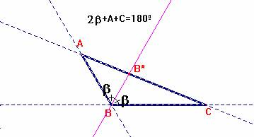
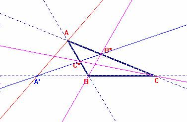

Problema 97.-
Las bisectrices internas de dos ángulos de un triángulo escaleno y la exterior del tercer ángulo cortan a sus respectivos lados opuestos en tres puntos que están alineados.
Solución de F. Damián Aranda Ballesteros profesor de Matemáticas del IES Blas Infante en Córdoba (18 de Mayo de 2003)
|  |
Teorema de la
bisectriz interior de un triángulo. Dado el triángulo ABC, trazamos la bisectriz interior correspondiente al ángulo B que corta al lado opuesto en el punto B*. Entonces se verifica la igualdad: AB*/CB* = AB/CB . |
Dem.-
Usando el teorema de los senos en los triángulos BB*C
y ABB*, observamos las siguientes relaciones de igualdad:
senb/CB* = sen(A+b)/CB;
senb/AB* = sen(C+b)/AB;
Como quiera que A+2b+C=180º, entonces sen(C+b)=sen(A+b) y por tanto dividiendo ambas relaciones de igualdad obtenemos:
AB*/CB* = AB/CB
Teniendo en cuenta este resultado y el relativo a la tangente exterior podemos

escribir los siguientes resultados:
AC*/C*B = AC/BC;
BA'/A'C = AB/AC;
CB*/B*A =BC/AB;
De este modo, se verificará la relación exigida en el Teorema
de Menelao (modo recíproco) para que los punto
A', B* y C* estén alineados. Es decir: